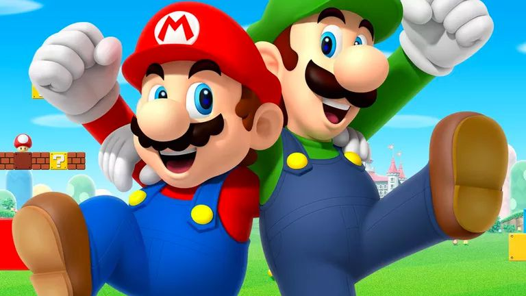
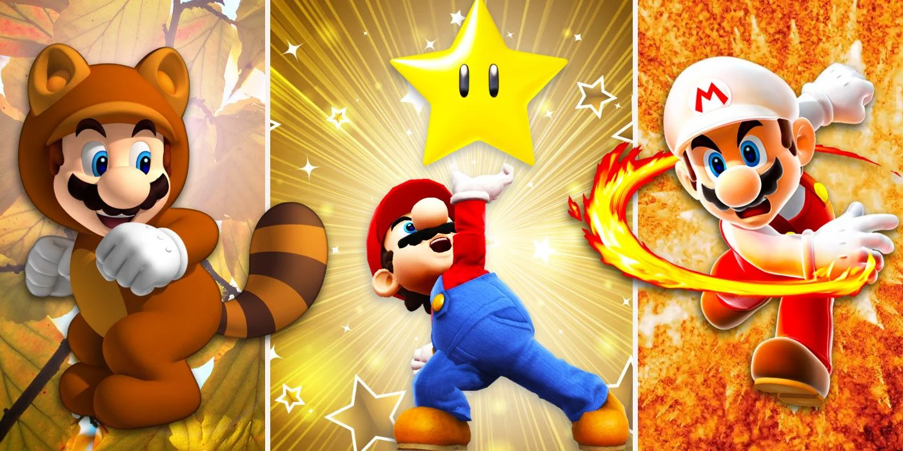

About Mario
Mario is the title character of the Mario video game franchise and the mascot of Japanese video game company Nintendo. Mario has appeared in over 200 video games since his creation.
Mario's friends
Mario and his friend
Mario has some awsome friends. Click on the links below to read more about them:
Power-ups
Power-ups are unique items that give special abilities to characters that use them. Most of their effects make defeating enemies or exploring levels easier. Below is a list of power-ups in the Mario franchise:
- Fire Flower
- Invincibility Mushroom
- Mini Mushroom
- Pal Pill
- Super Leaf